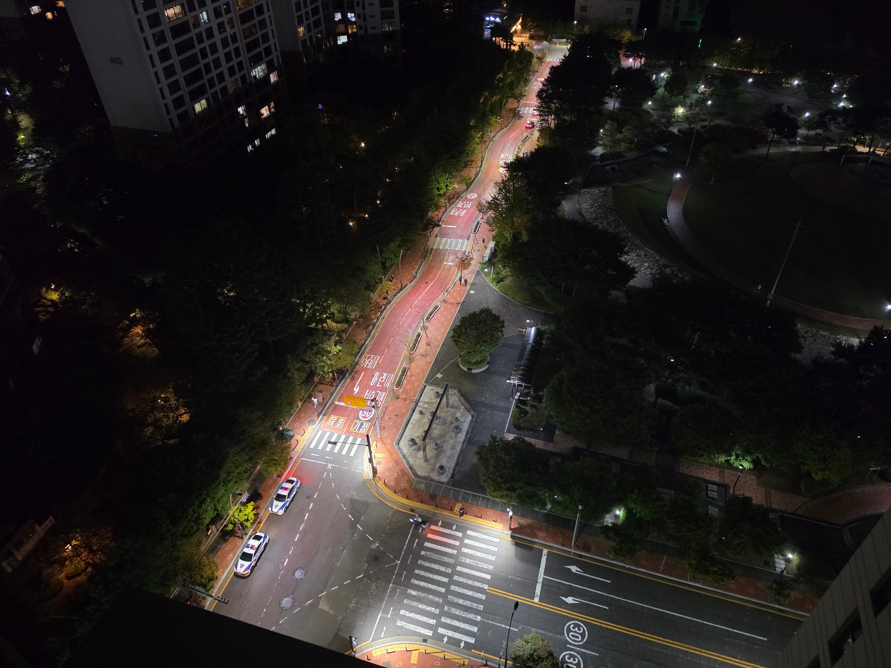

곱게 술 먹고 들어가 잠이나 주무시지 결국 끌려가네

곱게 술 먹고 들어가 잠이나 주무시지 결국 끌려가네
술 취한 사람이 저렇게 연행 되는건 처음 봄. 어지간하면 훈방 줄텐데
난 일방통행에서 역주행하던 아줌마랑 시비붙어서 경찰불렀는데 경찰한테 왜 아줌마 벌금 안끊냐면서 욕하다가 끌려가는 아저씨봤음
길이 꿀렁꿀렁하네
요즘 어린이 보호구역같은데는 과속하지 말라고 길 일부러 저리 만들음.
아하 나도 어쩔 수 없이 천천히 가게끔 저렇게 해놨나했네 ㅋㅋ
명절에 사건사고 많이 나지
요즘 폰 되게 선명하네 ㄷㄷ
S10쓰는데 바꿔야겠다
길 꼬라지가...? 제한속도 30때문에 일부러 저렇게 만들었나
저런애들 걍 살처분해야되는데 진짜 행정력낭비다
그래도 좀 젊어보이는데 저정도면 1~2번으로 끝남 [진짜]는 그 동네 살면서 친척들도 포기했는지 안오는 할배들이긴함ㅋㅋ
보정켯나? 길이 왜곡 되어잇네
어린이 보호구역은 꼬부랑 지그재그 길
도로 존나 밝엉
명절이 외롭진 않겠네